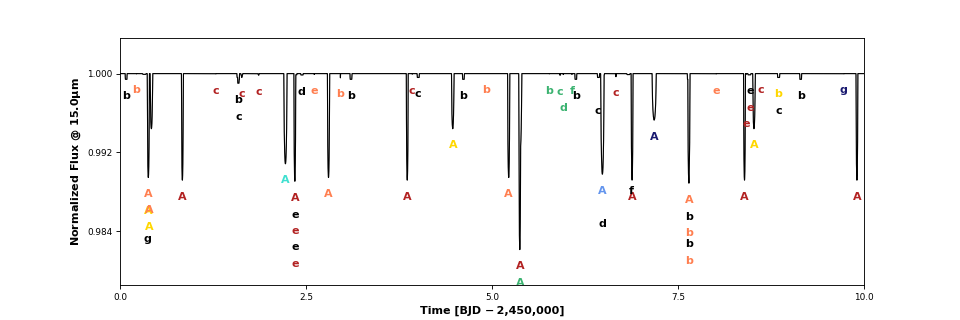

trappist1.py ¶
This module hosts TRAPPIST-1-specific routines.
-
planetplanet.photo.trappist1.Trappist1(sample=True, distance=12, seed=None, **kwargs)¶ Returns an instance of
planetplanet.photo.Systemfor the full TRAPPIST-1 system. Star and planet parameters are drawn from their respective prior distributions, which are based on the observed values from Gillon et al. (2017), Luger et al. (2017), and Burgasser & Mamajek (2017). Longitudes of ascending node are drawn from the \(\theta\) distribution derived in the paper.Parameters: - sample (bool) – Draw a random sample from the full prior? If
False,returns the mean values for all parameters. DefaultTrue - distance (float) – Distance to the system in parsecs. Default
12 - seed (int) – Random number generator seed. Default
None - kwargs – Any other
kwargsto be passed toplanetplanet.Star(),planetplanet.Planet(), andplanetplanet.System().
- sample (bool) – Draw a random sample from the full prior? If